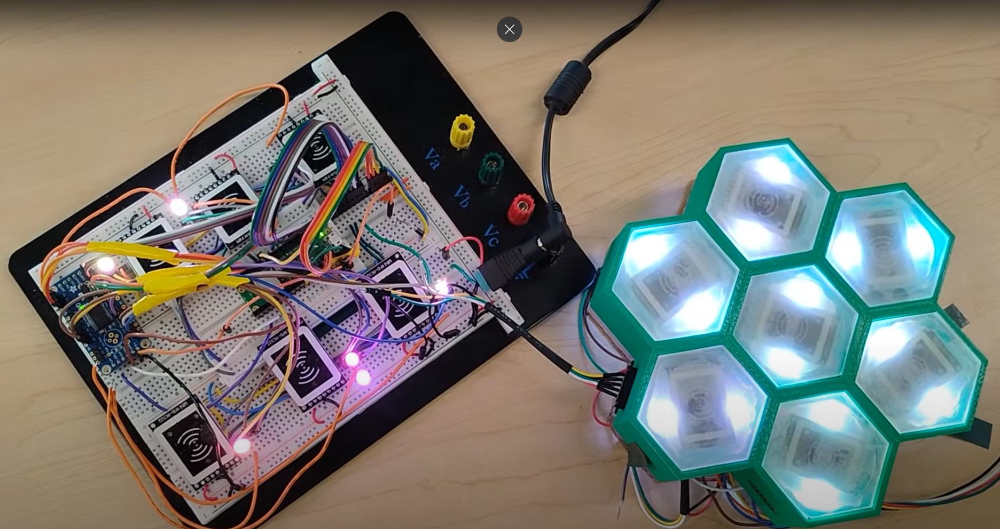

Interactive Gameboard
Capstone Project: Modular Interactive Tabletop Gaming System
Overview
This capstone project reimagines classic tabletop gaming (Dungeons & Dragons, Warhammer, Catan) with a modular, technology-assisted board that reacts to players in real time. Each hexagonal cell in a seven-tile "honeycomb" module contains an RGB LED and an NFC reader. Figurines carry their own character data on NFC tags, while a mobile app orchestrates setup, terrain, turns, and progression—entirely offline. The result is a shared, dynamic play surface that blends traditional tactics with modern interactivity.
Problem & Goals
Two goals drove the design: first, to make the game state visible and consistent for everyone at the table; second, to let characters travel between boards without cloud accounts or internet. That meant local storage on the figurines themselves, a responsive board that could change terrain and lighting on command, and a control surface players already own—their phones.
Solution in Practice
The system is built around a Raspberry Pi Pico W that communicates with a .NET MAUI mobile app over a TCP socket protocol with JSON messages. The architecture supports two phones — one per physical board — sharing state through the server so both players see the same game world. The app handles character creation and battle flow; when a character levels up, the updated stats are immediately written back to the figurine's NFC tag by the board. Terrain changes in the app recolor the corresponding physical tiles, keeping "screen" and table perfectly in sync.
Key Features
- Seven-Tile Modular Design: Honeycomb module with 3D-printed chassis and translucent resin caps for even light diffusion
- Offline Character Portability: Character data stored locally on NFC tags, enabling travel between boards without cloud accounts
- Dynamic Character Progression: Level-ups and stat changes written back to figurine tags in real-time during gameplay
- Two-Phone Shared Session: TCP socket server links two phones (one per physical board) with shared state broadcast to both clients
- Real-Time Terrain Control: App-driven terrain changes instantly reflected on physical tiles via RGB LEDs
- Fully Offline Operation: No internet or cloud services required—complete local functionality
Technologies Used
Hardware
- Raspberry Pi Pico W
- RC522-mini NFC Readers
- NTAG215 NFC Tags
- TLC5947 PWM LED Driver (SPI)
- RGB LEDs
- 3D-Printed Components
Software
- .NET MAUI Mobile App
- MicroPython Firmware
- TCP Sockets + JSON Messages
- SPI Protocol
- NFC/RFID Integration
Concepts
- IoT Development
- Multi-threading
- Real-time Communication
- Mobile Development
Project Media

Architecture & Design Choices
Hardware Selection
The architecture emphasizes cost, capability, and scale. The Raspberry Pi Pico W pairs with compact RC522-mini NFC readers and NTAG215 tags (chosen for ubiquity and affordability). LED channel limits were solved by offloading PWM to a TLC5947 driver over SPI. A 3D-printed chassis and translucent resin tile caps deliver even diffusion, while the seven-hex module keeps the footprint manageable and portable.
Threading Architecture Evolution
MicroPython's threading is still experimental, and putting the socket server on a secondary thread produced flaky client connections and dropped messages. The fix was inverting responsibilities — running the server on the main thread and pushing NFC I/O to the worker thread — which restored stability and made the system reliable under load.
LED Control Solution
The initial assumption that the Pico's PWM could directly drive all LEDs didn't hold. Introducing the TLC5947 PWM driver solved the channel shortfall and enabled smooth lighting effects across all seven tiles.
NFC Integration
NFC proved conceptually deep with uneven documentation. Adopting and extending a community MicroPython library accelerated a robust, well-structured integration that handles both reading character data and writing stat updates back to figurine tags.
What Works Today
One complete seven-tile module demonstrates the full loop: figures are created in-app, programmed to tags, recognized by the board, and updated during play. The app changes terrain and color on the physical grid, and multiple phones can participate in the same session. The build quality—diffused lighting, compact readers mounted to hide LEDs, and a tidy printed chassis—makes it presentable and robust for demos.
Challenges & Learnings
Physical Build Constraints
While we were ambitious with our initial vision, budget limitations and time constraints prevented ordering custom PCBs from China. This meant we couldn't integrate the entire system cleanly into the 3D-printed gameboard pieces. The final product is messier and less refined than originally envisioned, with exposed wiring and components that couldn't be neatly housed within the hexagon tiles.
Threading & Stability
MicroPython threading remains a careful balancing act, requiring strict separation of concerns between the I/O thread and the main event loop. The solution—server on main thread, NFC on worker thread—proved critical for reliable client connections.
NFC Precision
NFC read zones are intentionally tight, requiring precise figurine placement. The inverted RC522-mini design and cap layout mitigate this, but it remains a learned behavior for users.
Scaling Considerations
While the seven-tile module scales conceptually, expanding to many modules complicates power distribution and wiring, suggesting future architectural refinements will be needed.
Impact
The project delivers a durable, offline, and extensible play surface that keeps the "feel" of tabletop gaming while adding shared state, visual clarity, and progression mechanics—no accounts, no servers required. It showcases end-to-end engineering: embedded firmware, mobile UI, NFC/RFID integration, power and signal planning, and 3D fabrication.
Future Enhancements
- Rules-Agnostic Engine: Allow different game systems to plug in their mechanics for broader compatibility
- Auto-Discovery: Enable multi-module boards to automatically detect and configure connected tiles
- Real-Time Core Optimization: Selective C/C++ components for lower latency as the grid scales
- Improved Placement UX: Enhanced figurine detection and user feedback for more intuitive interaction
- Power Architecture: Better power distribution and communication infrastructure for multi-module setups